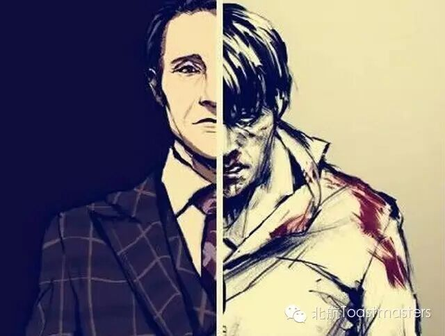
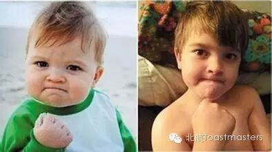

The Choices
TM：Bloomfield
TTM：Babara
Our life is full of various choices. The process of growing up is the process of learning to make better choices. The day that we can make the best choices is the day we success. Sometimes we may regret the choices we have made. Sometimes we fell lucky when choosing the right thing. Do you have some interesting stories about making a choice? There are a group of people who would like to share some interesting experiences about that and hope you can come to our meeting and share your own story.
Bean
How to Estimate He Is Your Mr. Right
CC1
There is always a romantic love story in every girl’s mind. But sometimes it doesn’t happen until the end. Do you know why? Because you don’t know how to find your Mr. Right. Bean, a very pretty girl, will teach you the right way to find your prince charming. Come, listen and you’ll find the one!
John
Inside and Outside
CC3

Every coin has two sides. Sometimes we only see the surface of things and don’t know the other side of that which always result in some unhappy things. So it’s a must for everyone to know things from several perspectives. And John will share his opinion about that.
Summers
Things About Growing Up
CC5

As time goes by, we are growing up from a crying baby to a handsome boy or a beautiful girl. There are lots of unforgettable memories with our growing up. It’s always funny and emotional when recalling the things only belong to our childhood. Summer wants to tell his growing story.
Toastmasters International (TI) is a nonprofit educational organization that operates clubs worldwide for the purpose of helping members improve their communication, public speaking, and leadership skills.

https://mp.weixin.qq.com/s/TlfD2REHKKS-80iOvR_hVw
本页为抢救式本地归档，图文已永久保存。